Home
Featured story and poster rail; sidebar navigation.
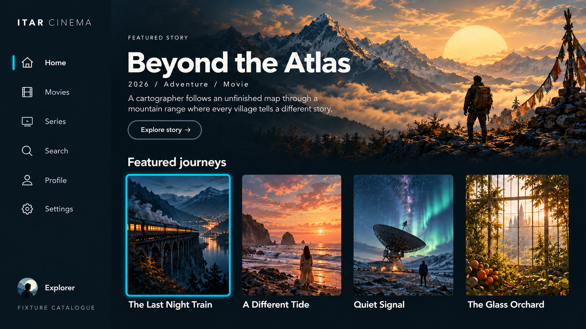
Open full-size imageMovies
Movie catalogue with landscape and poster rails.
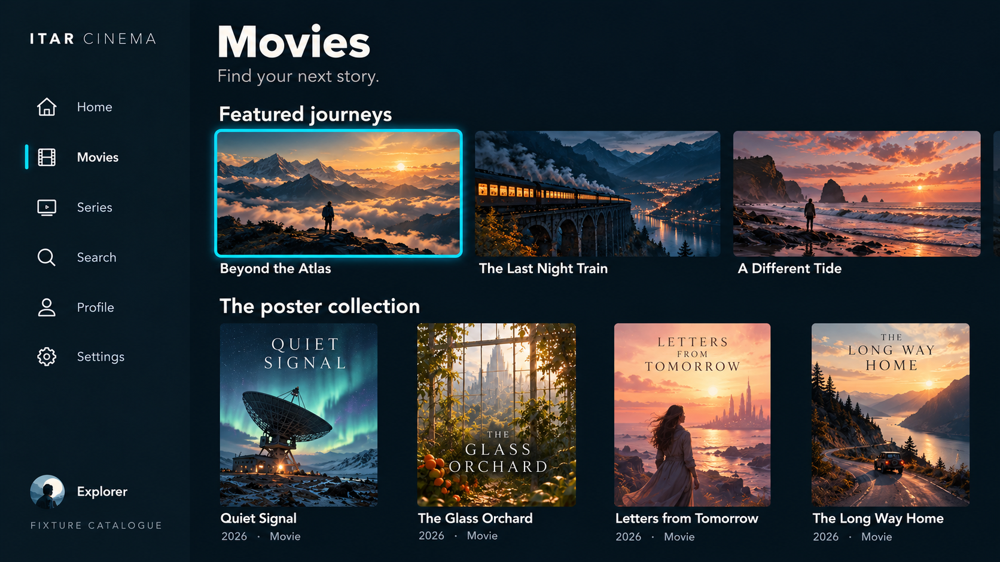
Open full-size imageSeries
Series catalogue using the same browsing structure.
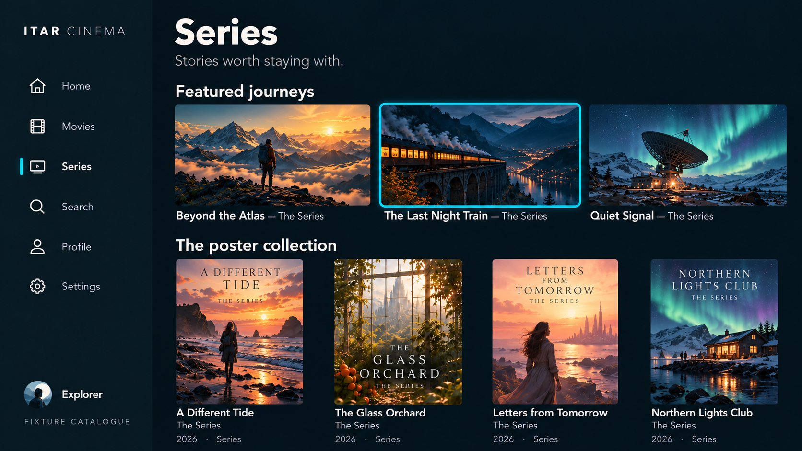
Open full-size imageSearch — results
A–Z remote keyboard beside matching titles.
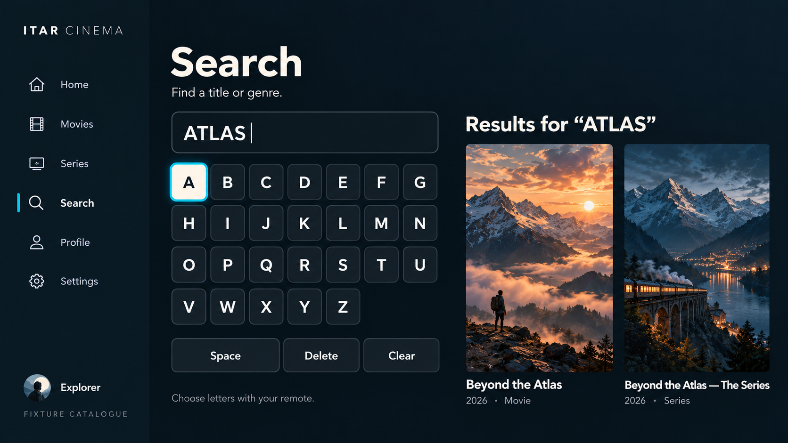
Open full-size imageProfile
Current profile and focused profile are distinct.
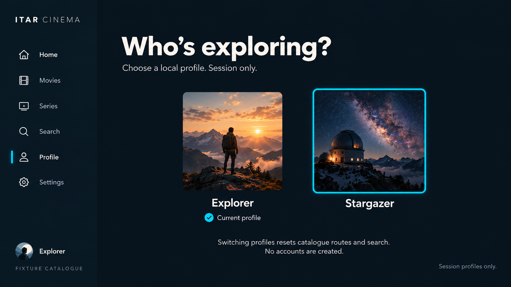
Open full-size imageSettings
Appearance and existing local fixture controls.
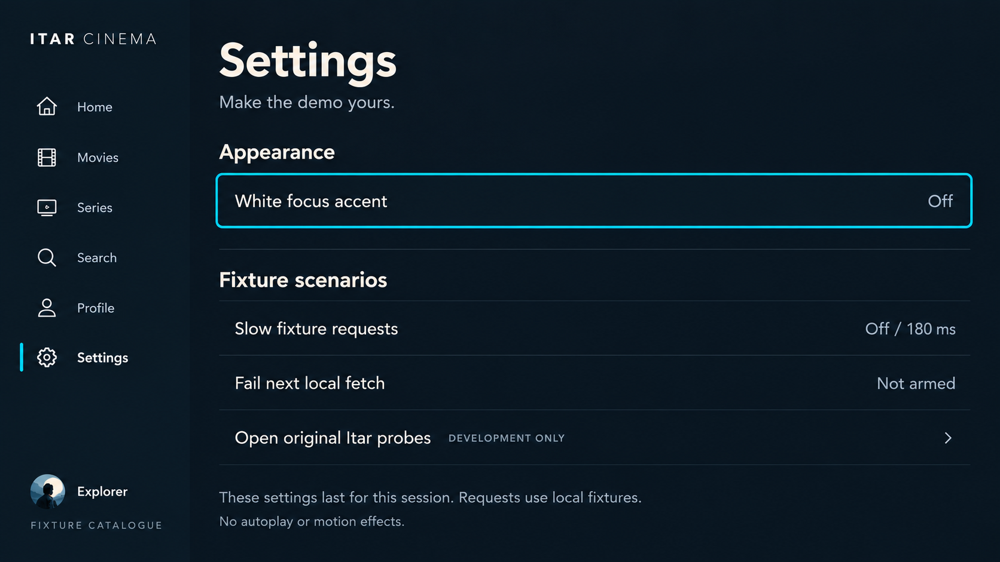
Open full-size imageTitle details
Title metadata, Back action and cast; background navigation inactive.
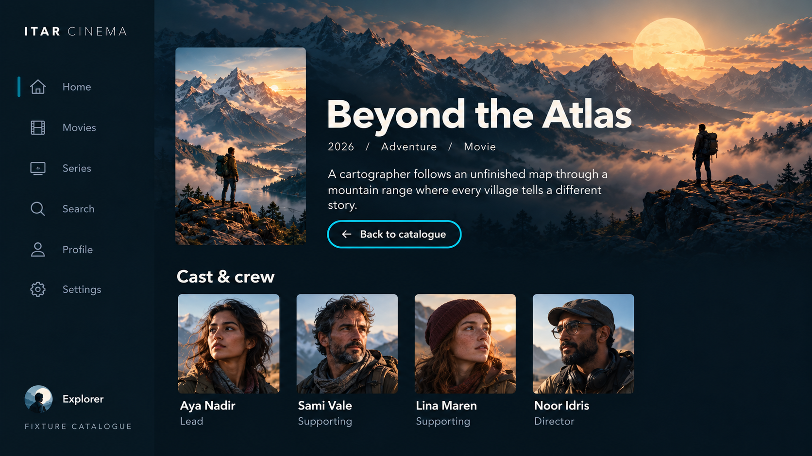
Open full-size imageCast biography
Inline biography within title details, not a new route.
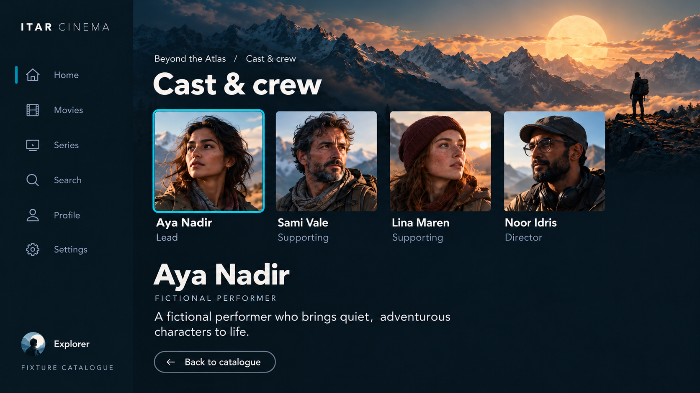
Open full-size imageSearch — no matches
Query and keyboard remain available; Clear focused.
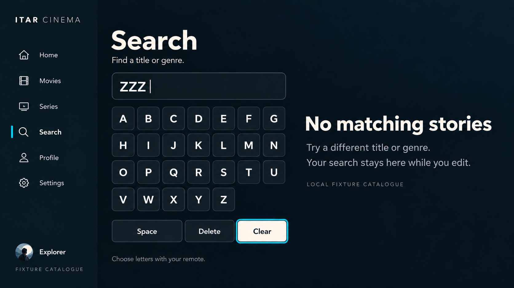
Open full-size imageCatalogue — loading
Stable decorative skeletons; sidebar remains available.
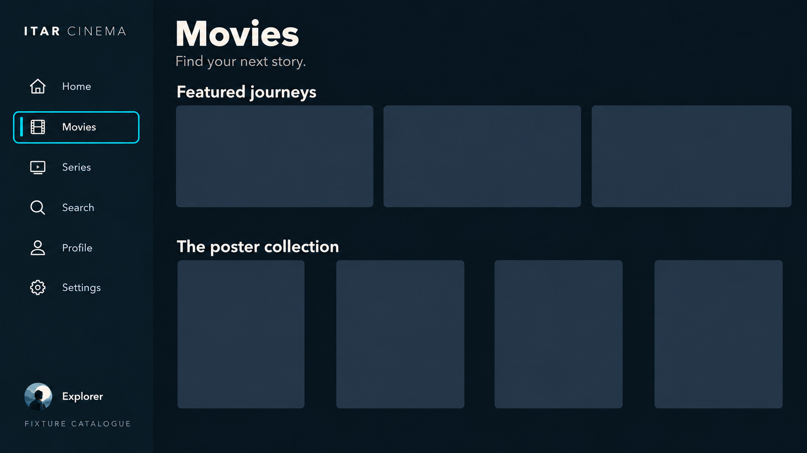
Open full-size imageCatalogue — retry message
Loaded content remains visible above the error and Retry action.
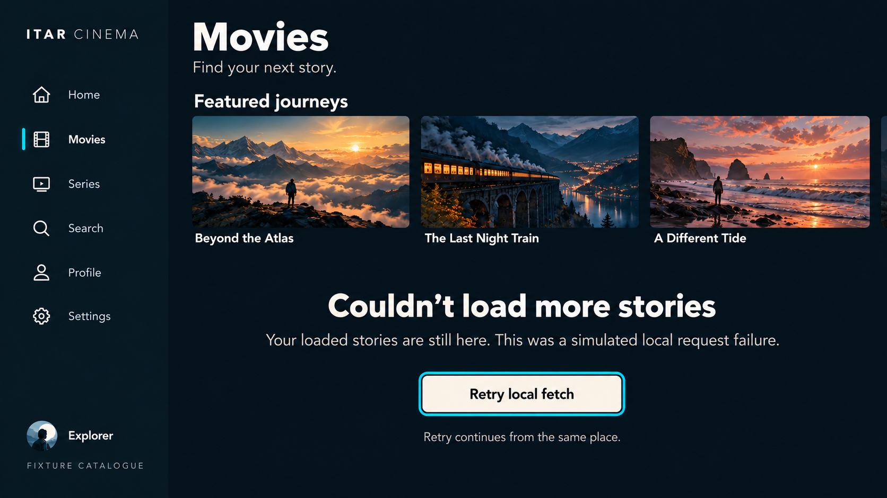
Open full-size image